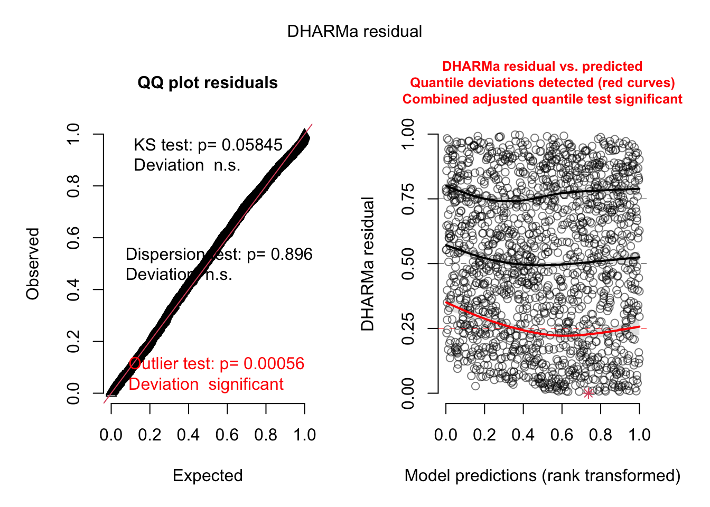
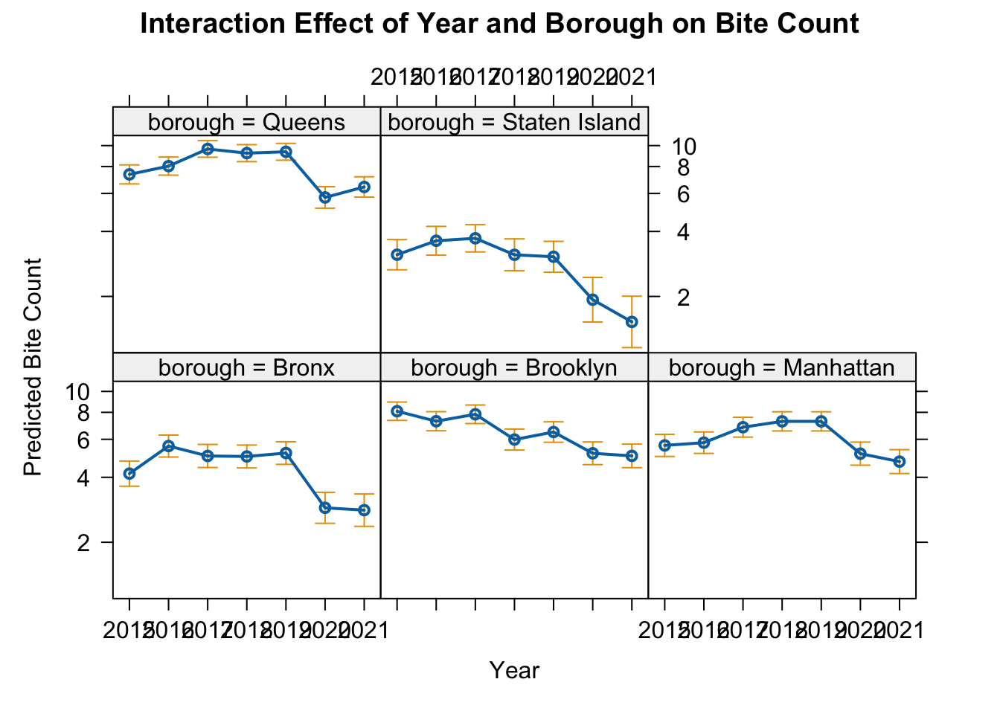
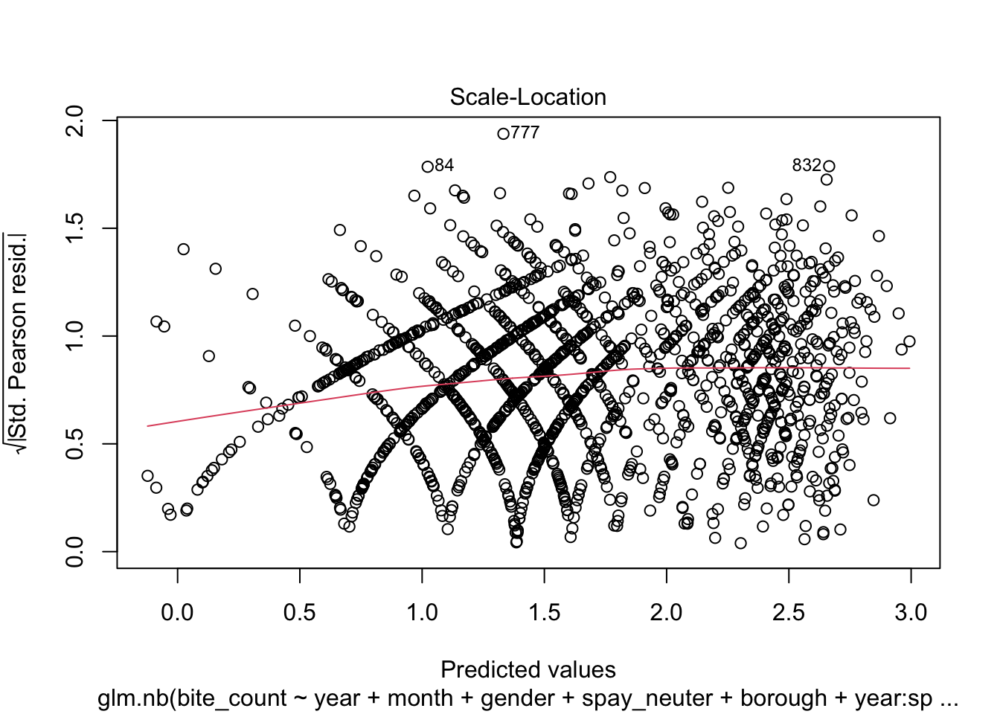
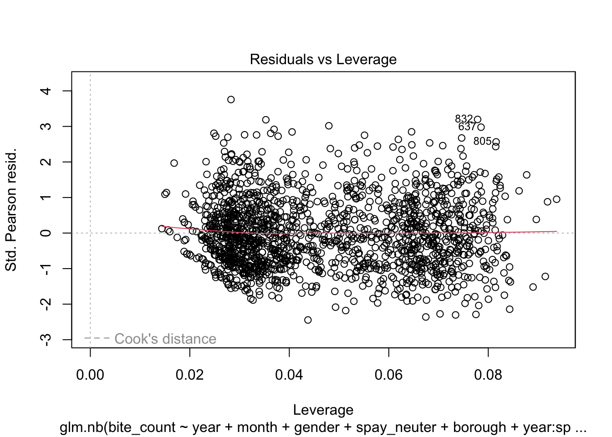
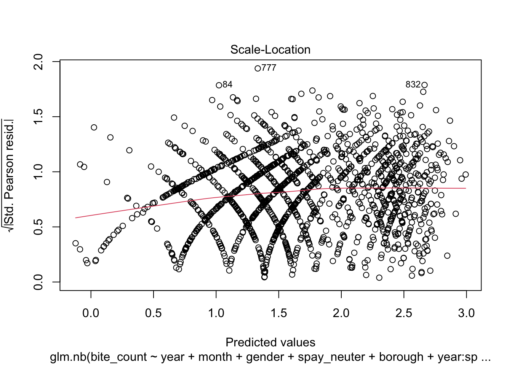
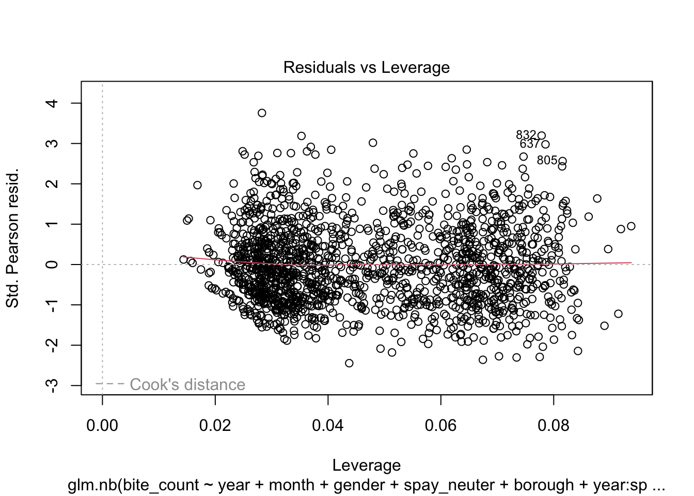
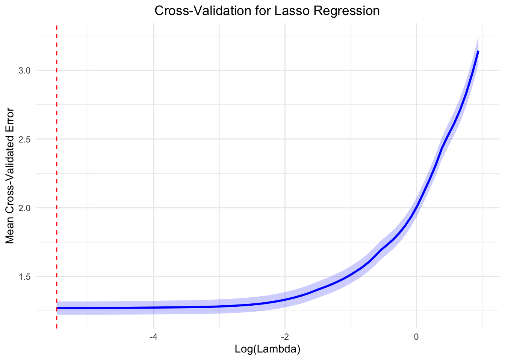

Cumulative impact of various factors on dog bite incidents
Variable features
回归使用zipcode中累积的dogbite数量为因变量。
Negative Binomial Regression Analysis
To measure the combined effects of year, dog background characteristics (i.e., gender and whether neutered) and the Borough they belong to on the incidence of dog bites, we first conduct a negative binomial regression analysis using records of dog bite incidents in New York.
The negative binomial regression model is a type of count model designed for dependent variables that can only take non-negative integer values. From the Spatial Correlations section, the study area meets the three prerequisites for negative binomial regression: the dog bite incidents are not independent, exhibiting spatial clustering; the dependent variable shows overdispersion; and the frequency of dog bite incidents is sufficiently low.
The dependent variable hypothesized in the article is the number of dog bite incidents per zipcode, which follows a negative binomial distribution. The predictor variables include the year and month of the incident, characteristics of the dog, and the area where the incident occurred. The year is measured as an interval-level variable, with values from 1 (corresponding to 2015) to 7 (corresponding to 2021). The area of the incident is divided into variables ranging from 1 to 5, representing the five boroughs of New York City. The gender of the dog is a binary variable, with 1 indicating female and 2 indicating male. Similarly, the sterilization status of the dog is also a binary variable, with 0 indicating unsterilized and 1 indicating sterilized. The model equation is as follows:
\[\ln ({\hat y_i}) = {\beta _0} + {\beta _1}{X_{i1}} + {\beta _2}{X_{i2}} + \cdots {\beta _m}{X_{im}} + \xi\] Here, \({y_i}\) represents the frequency of dog bite incidents within a year, \({\beta _m}\) is the coefficient, \(X_m\) are the explanatory variables, and \(\xi\) represents the heterogeneity across observations.
In negative binomial regression, where the conditional expectation \(E(Y|X) = {e^{{\beta _0} + {\beta _1}{X_{i1}} + {\beta _2}{X_{i2}} + \cdots {\beta _m}{X_{im}}}}\), the interpretation of the model’s coefficients is as follows: when the explanatory variable \({X_k}\) increases by one unit, the average occurrence rate of dog bite incidents becomes \({e^{{\beta _k}}}\) times what it was originally.
\[\frac{{E(Y|{X^*})}}{{E(Y|X)}} = \frac{{{e^{{\beta _0} + {\beta _1}{X_{i1}} + \cdots + {\beta _k}({X_{ik}} + 1) + \cdots + {\beta _m}{X_{im}}}}}}{{{e^{{\beta _0} + {\beta _1}{X_{i1}} + \cdots + {\beta _k}{X_{ik}} + \cdots + {\beta _m}{X_{im}}}}}} = {e^{{\beta _k}}}\]
Original Model
library(MASS)##
## Attaching package: 'MASS'## The following object is masked from 'package:plotly':
##
## select## The following object is masked from 'package:dplyr':
##
## selectdog_bites_filtered = dog_bites_clean %>%
filter(gender != "U",
zip_code %in% valid_zipcodes,
borough != "Other") %>%
mutate(
gender = factor(gender),
spay_neuter = factor(spay_neuter, levels = c(FALSE, TRUE), labels = c("Not Neutered", "Neutered")),
borough = factor(borough),
year = factor(year),
month = factor(month)
)
bites_by_group = dog_bites_filtered %>%
count(year, month, gender, spay_neuter, borough, name = "bite_count")
model = glm.nb(bite_count ~ year + month + gender + spay_neuter + borough, data = bites_by_group)
summary(model)##
## Call:
## glm.nb(formula = bite_count ~ year + month + gender + spay_neuter +
## borough, data = bites_by_group, init.theta = 25.18281019,
## link = log)
##
## Coefficients:
## Estimate Std. Error z value Pr(>|z|)
## (Intercept) 1.08198 0.05946 18.198 < 2e-16 ***
## year2016 0.06974 0.04157 1.678 0.093442 .
## year2017 0.15356 0.04091 3.754 0.000174 ***
## year2018 0.07524 0.04154 1.811 0.070080 .
## year2019 0.09421 0.04138 2.276 0.022824 *
## year2020 -0.27913 0.04543 -6.145 8.01e-10 ***
## year2021 -0.28710 0.04588 -6.258 3.91e-10 ***
## month2 0.00253 0.05872 0.043 0.965638
## month3 0.02998 0.05823 0.515 0.606714
## month4 0.12748 0.05712 2.232 0.025620 *
## month5 0.18071 0.05658 3.194 0.001404 **
## month6 0.24480 0.05597 4.374 1.22e-05 ***
## month7 0.20194 0.05655 3.571 0.000355 ***
## month8 0.22764 0.05635 4.040 5.35e-05 ***
## month9 0.14295 0.05710 2.503 0.012297 *
## month10 0.09120 0.05777 1.579 0.114408
## month11 0.08889 0.05772 1.540 0.123580
## month12 0.01850 0.05886 0.314 0.753242
## genderM 0.88512 0.02452 36.097 < 2e-16 ***
## spay_neuterNeutered -0.11228 0.02283 -4.918 8.76e-07 ***
## boroughBrooklyn 0.30511 0.03611 8.449 < 2e-16 ***
## boroughManhattan 0.23766 0.03651 6.509 7.57e-11 ***
## boroughQueens 0.49818 0.03497 14.246 < 2e-16 ***
## boroughStaten Island -0.55175 0.04468 -12.350 < 2e-16 ***
## ---
## Signif. codes: 0 '***' 0.001 '**' 0.01 '*' 0.05 '.' 0.1 ' ' 1
##
## (Dispersion parameter for Negative Binomial(25.1828) family taken to be 1)
##
## Null deviance: 3914.5 on 1572 degrees of freedom
## Residual deviance: 1549.7 on 1549 degrees of freedom
## AIC: 7403.4
##
## Number of Fisher Scoring iterations: 1
##
##
## Theta: 25.18
## Std. Err.: 4.28
##
## 2 x log-likelihood: -7353.42With Interaction
<<<<<<< HEADTo further increase the precision of the model fit, interaction terms between variables were added. After using stepwise reduction to simplify the model complexity, the final Negative Binomial Regression model is as follows:
model_all_interactions <- glm.nb(
formula = bite_count ~
year + month + gender + spay_neuter + borough +
year * month + year * gender + year * spay_neuter + year * borough +
month * gender + month * spay_neuter + month * borough +
gender * spay_neuter + gender * borough + spay_neuter * borough +
year * month * gender + year * month * spay_neuter + year * month * borough +
year * gender * spay_neuter + year * gender * borough + year * spay_neuter * borough +
month * gender * spay_neuter + month * gender * borough + month * spay_neuter * borough +
gender * spay_neuter * borough +
year * month * gender * spay_neuter + year * month * gender * borough +
year * month * spay_neuter * borough + year * gender * spay_neuter * borough +
month * gender * spay_neuter * borough,
data = bites_by_group
)
model_stepwise <- stepAIC(model_all_interactions, direction = "both")## Start: AIC=8389.27
## bite_count ~ year + month + gender + spay_neuter + borough +
## year * month + year * gender + year * spay_neuter + year *
## borough + month * gender + month * spay_neuter + month *
## borough + gender * spay_neuter + gender * borough + spay_neuter *
## borough + year * month * gender + year * month * spay_neuter +
## year * month * borough + year * gender * spay_neuter + year *
## gender * borough + year * spay_neuter * borough + month *
## gender * spay_neuter + month * gender * borough + month *
## spay_neuter * borough + gender * spay_neuter * borough +
## year * month * gender * spay_neuter + year * month * gender *
## borough + year * month * spay_neuter * borough + year * gender *
## spay_neuter * borough + month * gender * spay_neuter * borough## Df AIC
## - year:month:spay_neuter:borough 254 8071.1
## - year:month:gender:borough 249 8090.4
## - year:month:gender:spay_neuter 66 8320.2
## - month:gender:spay_neuter:borough 44 8346.1
## - year:gender:spay_neuter:borough 24 8357.8
## <none> 8389.3##
## Step: AIC=8071.05
## bite_count ~ year + month + gender + spay_neuter + borough +
## year:month + year:gender + year:spay_neuter + year:borough +
## month:gender + month:spay_neuter + month:borough + gender:spay_neuter +
## gender:borough + spay_neuter:borough + year:month:gender +
## year:month:spay_neuter + year:month:borough + year:gender:spay_neuter +
## year:gender:borough + year:spay_neuter:borough + month:gender:spay_neuter +
## month:gender:borough + month:spay_neuter:borough + gender:spay_neuter:borough +
## year:month:gender:spay_neuter + year:month:gender:borough +
## year:gender:spay_neuter:borough + month:gender:spay_neuter:borough## Df AIC
## - year:month:gender:borough 250 7774.1
## - year:month:gender:spay_neuter 66 8002.2
## - month:gender:spay_neuter:borough 44 8026.8
## - year:gender:spay_neuter:borough 24 8039.3
## <none> 8071.1
## + year:month:spay_neuter:borough 254 8389.3##
## Step: AIC=7774.08
## bite_count ~ year + month + gender + spay_neuter + borough +
## year:month + year:gender + year:spay_neuter + year:borough +
## month:gender + month:spay_neuter + month:borough + gender:spay_neuter +
## gender:borough + spay_neuter:borough + year:month:gender +
## year:month:spay_neuter + year:month:borough + year:gender:spay_neuter +
## year:gender:borough + year:spay_neuter:borough + month:gender:spay_neuter +
## month:gender:borough + month:spay_neuter:borough + gender:spay_neuter:borough +
## year:month:gender:spay_neuter + year:gender:spay_neuter:borough +
## month:gender:spay_neuter:borough## Df AIC
## - year:month:borough 263 7512.8
## - year:month:gender:spay_neuter 66 7706.9
## - month:gender:spay_neuter:borough 44 7729.7
## - year:gender:spay_neuter:borough 24 7746.2
## <none> 7774.1
## + year:month:gender:borough 250 8071.1
## + year:month:spay_neuter:borough 255 8090.4##
## Step: AIC=7512.75
## bite_count ~ year + month + gender + spay_neuter + borough +
## year:month + year:gender + year:spay_neuter + year:borough +
## month:gender + month:spay_neuter + month:borough + gender:spay_neuter +
## gender:borough + spay_neuter:borough + year:month:gender +
## year:month:spay_neuter + year:gender:spay_neuter + year:gender:borough +
## year:spay_neuter:borough + month:gender:spay_neuter + month:gender:borough +
## month:spay_neuter:borough + gender:spay_neuter:borough +
## year:month:gender:spay_neuter + year:gender:spay_neuter:borough +
## month:gender:spay_neuter:borough## Df AIC
## - year:month:gender:spay_neuter 66 7443.2
## - month:gender:spay_neuter:borough 44 7465.5
## - year:gender:spay_neuter:borough 24 7485.2
## <none> 7512.8
## + year:month:borough 263 7774.1##
## Step: AIC=7443.17
## bite_count ~ year + month + gender + spay_neuter + borough +
## year:month + year:gender + year:spay_neuter + year:borough +
## month:gender + month:spay_neuter + month:borough + gender:spay_neuter +
## gender:borough + spay_neuter:borough + year:month:gender +
## year:month:spay_neuter + year:gender:spay_neuter + year:gender:borough +
## year:spay_neuter:borough + month:gender:spay_neuter + month:gender:borough +
## month:spay_neuter:borough + gender:spay_neuter:borough +
## year:gender:spay_neuter:borough + month:gender:spay_neuter:borough## Df AIC
## - year:month:gender 66 7374.4
## - year:month:spay_neuter 66 7389.4
## - month:gender:spay_neuter:borough 44 7397.2
## - year:gender:spay_neuter:borough 24 7416.8
## <none> 7443.2
## + year:month:gender:spay_neuter 66 7512.8
## + year:month:borough 263 7706.9##
## Step: AIC=7374.41
## bite_count ~ year + month + gender + spay_neuter + borough +
## year:month + year:gender + year:spay_neuter + year:borough +
## month:gender + month:spay_neuter + month:borough + gender:spay_neuter +
## gender:borough + spay_neuter:borough + year:month:spay_neuter +
## year:gender:spay_neuter + year:gender:borough + year:spay_neuter:borough +
## month:gender:spay_neuter + month:gender:borough + month:spay_neuter:borough +
## gender:spay_neuter:borough + year:gender:spay_neuter:borough +
## month:gender:spay_neuter:borough## Df AIC
## - year:month:spay_neuter 66 7319.9
## - month:gender:spay_neuter:borough 44 7327.4
## - year:gender:spay_neuter:borough 24 7346.7
## <none> 7374.4
## + year:month:gender 66 7443.2
## + year:month:borough 263 7635.4##
## Step: AIC=7319.95
## bite_count ~ year + month + gender + spay_neuter + borough +
## year:month + year:gender + year:spay_neuter + year:borough +
## month:gender + month:spay_neuter + month:borough + gender:spay_neuter +
## gender:borough + spay_neuter:borough + year:gender:spay_neuter +
## year:gender:borough + year:spay_neuter:borough + month:gender:spay_neuter +
## month:gender:borough + month:spay_neuter:borough + gender:spay_neuter:borough +
## year:gender:spay_neuter:borough + month:gender:spay_neuter:borough## Df AIC
## - month:gender:spay_neuter:borough 44 7273.5
## - year:gender:spay_neuter:borough 24 7292.6
## <none> 7319.9
## - year:month 66 7320.7
## + year:month:spay_neuter 66 7374.4
## + year:month:gender 66 7389.4
## + year:month:borough 263 7579.6##
## Step: AIC=7273.52
## bite_count ~ year + month + gender + spay_neuter + borough +
## year:month + year:gender + year:spay_neuter + year:borough +
## month:gender + month:spay_neuter + month:borough + gender:spay_neuter +
## gender:borough + spay_neuter:borough + year:gender:spay_neuter +
## year:gender:borough + year:spay_neuter:borough + month:gender:spay_neuter +
## month:gender:borough + month:spay_neuter:borough + gender:spay_neuter:borough +
## year:gender:spay_neuter:borough## Df AIC
## - month:gender:borough 44 7220.9
## - month:spay_neuter:borough 44 7234.1
## - year:gender:spay_neuter:borough 24 7245.4
## - month:gender:spay_neuter 11 7261.1
## - year:month 66 7273.2
## <none> 7273.5
## + month:gender:spay_neuter:borough 44 7319.9
## + year:month:spay_neuter 66 7327.4
## + year:month:gender 66 7344.0
## + year:month:borough 263 7534.6##
## Step: AIC=7220.93
## bite_count ~ year + month + gender + spay_neuter + borough +
## year:month + year:gender + year:spay_neuter + year:borough +
## month:gender + month:spay_neuter + month:borough + gender:spay_neuter +
## gender:borough + spay_neuter:borough + year:gender:spay_neuter +
## year:gender:borough + year:spay_neuter:borough + month:gender:spay_neuter +
## month:spay_neuter:borough + gender:spay_neuter:borough +
## year:gender:spay_neuter:borough## Df AIC
## - month:spay_neuter:borough 44 7181.9
## - year:gender:spay_neuter:borough 24 7193.6
## - month:gender:spay_neuter 11 7208.8
## - year:month 66 7219.8
## <none> 7220.9
## + month:gender:borough 44 7273.5
## + year:month:spay_neuter 66 7274.7
## + year:month:gender 66 7290.7
## + year:month:borough 263 7481.4##
## Step: AIC=7181.87
## bite_count ~ year + month + gender + spay_neuter + borough +
## year:month + year:gender + year:spay_neuter + year:borough +
## month:gender + month:spay_neuter + month:borough + gender:spay_neuter +
## gender:borough + spay_neuter:borough + year:gender:spay_neuter +
## year:gender:borough + year:spay_neuter:borough + month:gender:spay_neuter +
## gender:spay_neuter:borough + year:gender:spay_neuter:borough## Df AIC
## - year:gender:spay_neuter:borough 24 7153.9
## - month:borough 44 7156.3
## - month:gender:spay_neuter 11 7169.8
## - year:month 66 7181.0
## <none> 7181.9
## + month:spay_neuter:borough 44 7220.9
## + month:gender:borough 44 7234.1
## + year:month:spay_neuter 66 7234.7
## + year:month:gender 66 7252.6
## + year:month:borough 263 7437.9##
## Step: AIC=7153.94
## bite_count ~ year + month + gender + spay_neuter + borough +
## year:month + year:gender + year:spay_neuter + year:borough +
## month:gender + month:spay_neuter + month:borough + gender:spay_neuter +
## gender:borough + spay_neuter:borough + year:gender:spay_neuter +
## year:gender:borough + year:spay_neuter:borough + month:gender:spay_neuter +
## gender:spay_neuter:borough## Df AIC
## - month:borough 44 7128.6
## - year:gender:borough 24 7132.6
## - year:spay_neuter:borough 24 7142.0
## - month:gender:spay_neuter 11 7142.1
## - year:gender:spay_neuter 6 7146.2
## - gender:spay_neuter:borough 4 7147.8
## - year:month 66 7152.8
## <none> 7153.9
## + year:gender:spay_neuter:borough 24 7181.9
## + month:spay_neuter:borough 44 7193.6
## + month:gender:borough 44 7205.4
## + year:month:spay_neuter 66 7206.8
## + year:month:gender 66 7225.6
## + year:month:borough 263 7409.6##
## Step: AIC=7128.6
## bite_count ~ year + month + gender + spay_neuter + borough +
## year:month + year:gender + year:spay_neuter + year:borough +
## month:gender + month:spay_neuter + gender:spay_neuter + gender:borough +
## spay_neuter:borough + year:gender:spay_neuter + year:gender:borough +
## year:spay_neuter:borough + month:gender:spay_neuter + gender:spay_neuter:borough## Df AIC
## - year:gender:borough 24 7106.9
## - year:spay_neuter:borough 24 7116.5
## - month:gender:spay_neuter 11 7116.7
## - year:gender:spay_neuter 6 7121.0
## - gender:spay_neuter:borough 4 7122.6
## - year:month 66 7126.9
## <none> 7128.6
## + month:borough 44 7153.9
## + year:gender:spay_neuter:borough 24 7156.3
## + year:month:spay_neuter 66 7181.6
## + year:month:gender 66 7199.5##
## Step: AIC=7106.86
## bite_count ~ year + month + gender + spay_neuter + borough +
## year:month + year:gender + year:spay_neuter + year:borough +
## month:gender + month:spay_neuter + gender:spay_neuter + gender:borough +
## spay_neuter:borough + year:gender:spay_neuter + year:spay_neuter:borough +
## month:gender:spay_neuter + gender:spay_neuter:borough## Df AIC
## - year:spay_neuter:borough 24 7094.6
## - month:gender:spay_neuter 11 7094.7
## - year:gender:spay_neuter 6 7098.1
## - gender:spay_neuter:borough 4 7100.5
## - year:month 66 7105.2
## <none> 7106.9
## + year:gender:borough 24 7128.6
## + month:borough 44 7132.6
## + year:month:spay_neuter 66 7159.9
## + year:month:gender 66 7177.9##
## Step: AIC=7094.63
## bite_count ~ year + month + gender + spay_neuter + borough +
## year:month + year:gender + year:spay_neuter + year:borough +
## month:gender + month:spay_neuter + gender:spay_neuter + gender:borough +
## spay_neuter:borough + year:gender:spay_neuter + month:gender:spay_neuter +
## gender:spay_neuter:borough## Df AIC
## - month:gender:spay_neuter 11 7082.5
## - year:gender:spay_neuter 6 7086.0
## - gender:spay_neuter:borough 4 7088.2
## - year:month 66 7092.7
## <none> 7094.6
## + year:spay_neuter:borough 24 7106.9
## + year:gender:borough 24 7116.5
## + month:borough 44 7120.6
## - year:borough 24 7137.0
## + year:month:spay_neuter 66 7147.5
## + year:month:gender 66 7165.9##
## Step: AIC=7082.51
## bite_count ~ year + month + gender + spay_neuter + borough +
## year:month + year:gender + year:spay_neuter + year:borough +
## month:gender + month:spay_neuter + gender:spay_neuter + gender:borough +
## spay_neuter:borough + year:gender:spay_neuter + gender:spay_neuter:borough## Df AIC
## - month:gender 11 7064.9
## - year:gender:spay_neuter 6 7073.8
## - gender:spay_neuter:borough 4 7076.0
## - year:month 66 7080.4
## - month:spay_neuter 11 7082.4
## <none> 7082.5
## + month:gender:spay_neuter 11 7094.6
## + year:spay_neuter:borough 24 7094.7
## + year:gender:borough 24 7104.6
## + month:borough 44 7108.6
## - year:borough 24 7125.3
## + year:month:spay_neuter 66 7136.1
## + year:month:gender 66 7153.0##
## Step: AIC=7064.92
## bite_count ~ year + month + gender + spay_neuter + borough +
## year:month + year:gender + year:spay_neuter + year:borough +
## month:spay_neuter + gender:spay_neuter + gender:borough +
## spay_neuter:borough + year:gender:spay_neuter + gender:spay_neuter:borough## Df AIC
## - year:gender:spay_neuter 6 7056.2
## - gender:spay_neuter:borough 4 7058.4
## - year:month 66 7062.9
## <none> 7064.9
## - month:spay_neuter 11 7065.0
## + year:spay_neuter:borough 24 7077.0
## + month:gender 11 7082.5
## + year:gender:borough 24 7086.9
## + month:borough 44 7091.0
## - year:borough 24 7107.9
## + year:month:spay_neuter 66 7118.8##
## Step: AIC=7056.21
## bite_count ~ year + month + gender + spay_neuter + borough +
## year:month + year:gender + year:spay_neuter + year:borough +
## month:spay_neuter + gender:spay_neuter + gender:borough +
## spay_neuter:borough + gender:spay_neuter:borough## Df AIC
## - gender:spay_neuter:borough 4 7049.7
## - year:gender 6 7052.2
## - year:month 66 7054.2
## <none> 7056.2
## - month:spay_neuter 11 7056.3
## + year:gender:spay_neuter 6 7064.9
## + year:spay_neuter:borough 24 7068.1
## + month:gender 11 7073.8
## + year:gender:borough 24 7079.2
## + month:borough 44 7082.3
## - year:borough 24 7099.3
## - year:spay_neuter 6 7107.2
## + year:month:spay_neuter 66 7110.1##
## Step: AIC=7049.72
## bite_count ~ year + month + gender + spay_neuter + borough +
## year:month + year:gender + year:spay_neuter + year:borough +
## month:spay_neuter + gender:spay_neuter + gender:borough +
## spay_neuter:borough## Df AIC
## - year:gender 6 7045.7
## - year:month 66 7047.8
## <none> 7049.7
## - month:spay_neuter 11 7049.8
## + gender:spay_neuter:borough 4 7056.2
## - gender:spay_neuter 1 7056.5
## - gender:borough 4 7057.3
## + year:gender:spay_neuter 6 7058.4
## + year:spay_neuter:borough 24 7061.7
## + month:gender 11 7067.3
## + year:gender:borough 24 7072.7
## + month:borough 44 7075.7
## - year:borough 24 7093.0
## - year:spay_neuter 6 7100.9
## + year:month:spay_neuter 66 7103.7
## - spay_neuter:borough 4 7364.3##
## Step: AIC=7045.75
## bite_count ~ year + month + gender + spay_neuter + borough +
## year:month + year:spay_neuter + year:borough + month:spay_neuter +
## gender:spay_neuter + gender:borough + spay_neuter:borough## Df AIC
## - year:month 66 7043.8
## <none> 7045.7
## - month:spay_neuter 11 7045.8
## + year:gender 6 7049.7
## - gender:spay_neuter 1 7051.7
## - gender:borough 4 7051.9
## + gender:spay_neuter:borough 4 7052.2
## + year:spay_neuter:borough 24 7057.5
## + month:gender 11 7063.4
## + month:borough 44 7071.7
## - year:borough 24 7089.4
## - year:spay_neuter 6 7096.1
## + year:month:spay_neuter 66 7099.7
## - spay_neuter:borough 4 7360.7##
## Step: AIC=7043.76
## bite_count ~ year + month + gender + spay_neuter + borough +
## year:spay_neuter + year:borough + month:spay_neuter + gender:spay_neuter +
## gender:borough + spay_neuter:borough## Df AIC
## <none> 7043.8
## + year:month 66 7045.7
## - month:spay_neuter 11 7047.1
## + year:gender 6 7047.8
## - gender:spay_neuter 1 7049.7
## - gender:borough 4 7049.9
## + gender:spay_neuter:borough 4 7050.2
## + year:spay_neuter:borough 24 7055.9
## + month:gender 11 7061.2
## + month:borough 44 7070.3
## - year:borough 24 7084.8
## - year:spay_neuter 6 7096.0
## - spay_neuter:borough 4 7340.9filter_model = glm.nb(bite_count ~ year + month + gender + spay_neuter +
borough + year:spay_neuter + year:borough + month:spay_neuter +
gender:spay_neuter + gender:borough + spay_neuter:borough,
data = bites_by_group)## Warning in theta.ml(Y, mu, sum(w), w, limit = control$maxit, trace =
## control$trace > : iteration limit reached
## Warning in theta.ml(Y, mu, sum(w), w, limit = control$maxit, trace =
## control$trace > : iteration limit reachedsummary(filter_model)##
## Call:
## glm.nb(formula = bite_count ~ year + month + gender + spay_neuter +
## borough + year:spay_neuter + year:borough + month:spay_neuter +
## gender:spay_neuter + gender:borough + spay_neuter:borough,
## data = bites_by_group, init.theta = 35483.47117, link = log)
##
## Coefficients:
## Estimate Std. Error z value Pr(>|z|)
## (Intercept) 1.341982 0.091715 14.632 < 2e-16
## year2016 0.264946 0.090104 2.940 0.003277
## year2017 0.129712 0.092290 1.405 0.159878
## year2018 0.271432 0.090817 2.989 0.002801
## year2019 0.271740 0.090544 3.001 0.002689
## year2020 -0.194931 0.104705 -1.862 0.062642
## year2021 -0.215686 0.107294 -2.010 0.044406
## month2 -0.027454 0.069567 -0.395 0.693106
## month3 0.010489 0.068496 0.153 0.878294
## month4 -0.006620 0.068491 -0.097 0.922998
## month5 0.065807 0.067283 0.978 0.328038
## month6 0.156214 0.065759 2.376 0.017522
## month7 0.190514 0.065407 2.913 0.003582
## month8 0.140605 0.066486 2.115 0.034448
## month9 0.032965 0.068063 0.484 0.628152
## month10 0.091623 0.067365 1.360 0.173794
## month11 0.017673 0.068307 0.259 0.795847
## month12 -0.012775 0.068906 -0.185 0.852919
## genderM 0.858813 0.054618 15.724 < 2e-16
## spay_neuterNeutered -0.926300 0.109048 -8.494 < 2e-16
## boroughBrooklyn 0.138429 0.100729 1.374 0.169360
## boroughManhattan -0.330011 0.108318 -3.047 0.002314
## boroughQueens 0.005221 0.100485 0.052 0.958560
## boroughStaten Island -0.735464 0.129502 -5.679 1.35e-08
## year2016:spay_neuterNeutered 0.059432 0.073885 0.804 0.421172
## year2017:spay_neuterNeutered 0.118824 0.072212 1.645 0.099869
## year2018:spay_neuterNeutered -0.178941 0.073824 -2.424 0.015355
## year2019:spay_neuterNeutered -0.105464 0.073298 -1.439 0.150195
## year2020:spay_neuterNeutered -0.343394 0.083263 -4.124 3.72e-05
## year2021:spay_neuterNeutered -0.351875 0.084249 -4.177 2.96e-05
## year2016:boroughBrooklyn -0.401051 0.113611 -3.530 0.000416
## year2017:boroughBrooklyn -0.221060 0.114629 -1.928 0.053795
## year2018:boroughBrooklyn -0.485118 0.116810 -4.153 3.28e-05
## year2019:boroughBrooklyn -0.441569 0.115885 -3.810 0.000139
## year2020:boroughBrooklyn -0.084009 0.130890 -0.642 0.520983
## year2021:boroughBrooklyn -0.086726 0.134072 -0.647 0.517722
## year2016:boroughManhattan -0.265007 0.121969 -2.173 0.029800
## year2017:boroughManhattan 0.005676 0.121403 0.047 0.962707
## year2018:boroughManhattan 0.073638 0.120001 0.614 0.539453
## year2019:boroughManhattan 0.036786 0.119708 0.307 0.758616
## year2020:boroughManhattan 0.276769 0.136570 2.027 0.042706
## year2021:boroughManhattan 0.216915 0.139749 1.552 0.120621
## year2016:boroughQueens -0.205677 0.113647 -1.810 0.070329
## year2017:boroughQueens 0.083213 0.113586 0.733 0.463805
## year2018:boroughQueens 0.043839 0.113139 0.387 0.698403
## year2019:boroughQueens 0.021763 0.112744 0.193 0.846939
## year2020:boroughQueens 0.118833 0.130621 0.910 0.362951
## year2021:boroughQueens 0.255885 0.131547 1.945 0.051750
## year2016:boroughStaten Island -0.145628 0.143157 -1.017 0.309031
## year2017:boroughStaten Island -0.013484 0.142522 -0.095 0.924627
## year2018:boroughStaten Island -0.183792 0.148307 -1.239 0.215246
## year2019:boroughStaten Island -0.241500 0.146806 -1.645 0.099964
## year2020:boroughStaten Island -0.115257 0.178990 -0.644 0.519622
## year2021:boroughStaten Island -0.327040 0.192923 -1.695 0.090040
## month2:spay_neuterNeutered 0.093060 0.104601 0.890 0.373646
## month3:spay_neuterNeutered 0.057360 0.103859 0.552 0.580754
## month4:spay_neuterNeutered 0.304865 0.101057 3.017 0.002555
## month5:spay_neuterNeutered 0.267348 0.099878 2.677 0.007434
## month6:spay_neuterNeutered 0.221396 0.098430 2.249 0.024495
## month7:spay_neuterNeutered 0.053891 0.099843 0.540 0.589366
## month8:spay_neuterNeutered 0.204595 0.099156 2.063 0.039077
## month9:spay_neuterNeutered 0.251572 0.100921 2.493 0.012676
## month10:spay_neuterNeutered 0.021214 0.102592 0.207 0.836178
## month11:spay_neuterNeutered 0.158559 0.102491 1.547 0.121848
## month12:spay_neuterNeutered 0.077373 0.104968 0.737 0.461056
## genderM:spay_neuterNeutered -0.127791 0.045308 -2.820 0.004795
## genderM:boroughBrooklyn 0.158718 0.071433 2.222 0.026289
## genderM:boroughManhattan 0.124864 0.072546 1.721 0.085221
## genderM:boroughQueens 0.156415 0.068417 2.286 0.022243
## genderM:boroughStaten Island -0.097614 0.091720 -1.064 0.287213
## spay_neuterNeutered:boroughBrooklyn 0.898637 0.069394 12.950 < 2e-16
## spay_neuterNeutered:boroughManhattan 1.144141 0.070459 16.238 < 2e-16
## spay_neuterNeutered:boroughQueens 0.975707 0.067006 14.561 < 2e-16
## spay_neuterNeutered:boroughStaten Island 1.009285 0.086896 11.615 < 2e-16
##
## (Intercept) ***
## year2016 **
## year2017
## year2018 **
## year2019 **
## year2020 .
## year2021 *
## month2
## month3
## month4
## month5
## month6 *
## month7 **
## month8 *
## month9
## month10
## month11
## month12
## genderM ***
## spay_neuterNeutered ***
## boroughBrooklyn
## boroughManhattan **
## boroughQueens
## boroughStaten Island ***
## year2016:spay_neuterNeutered
## year2017:spay_neuterNeutered .
## year2018:spay_neuterNeutered *
## year2019:spay_neuterNeutered
## year2020:spay_neuterNeutered ***
## year2021:spay_neuterNeutered ***
## year2016:boroughBrooklyn ***
## year2017:boroughBrooklyn .
## year2018:boroughBrooklyn ***
## year2019:boroughBrooklyn ***
## year2020:boroughBrooklyn
## year2021:boroughBrooklyn
## year2016:boroughManhattan *
## year2017:boroughManhattan
## year2018:boroughManhattan
## year2019:boroughManhattan
## year2020:boroughManhattan *
## year2021:boroughManhattan
## year2016:boroughQueens .
## year2017:boroughQueens
## year2018:boroughQueens
## year2019:boroughQueens
## year2020:boroughQueens
## year2021:boroughQueens .
## year2016:boroughStaten Island
## year2017:boroughStaten Island
## year2018:boroughStaten Island
## year2019:boroughStaten Island .
## year2020:boroughStaten Island
## year2021:boroughStaten Island .
## month2:spay_neuterNeutered
## month3:spay_neuterNeutered
## month4:spay_neuterNeutered **
## month5:spay_neuterNeutered **
## month6:spay_neuterNeutered *
## month7:spay_neuterNeutered
## month8:spay_neuterNeutered *
## month9:spay_neuterNeutered *
## month10:spay_neuterNeutered
## month11:spay_neuterNeutered
## month12:spay_neuterNeutered
## genderM:spay_neuterNeutered **
## genderM:boroughBrooklyn *
## genderM:boroughManhattan .
## genderM:boroughQueens *
## genderM:boroughStaten Island
## spay_neuterNeutered:boroughBrooklyn ***
## spay_neuterNeutered:boroughManhattan ***
## spay_neuterNeutered:boroughQueens ***
## spay_neuterNeutered:boroughStaten Island ***
## ---
## Signif. codes: 0 '***' 0.001 '**' 0.01 '*' 0.05 '.' 0.1 ' ' 1
##
## (Dispersion parameter for Negative Binomial(35483.47) family taken to be 1)
##
## Null deviance: 4944.9 on 1572 degrees of freedom
## Residual deviance: 1437.1 on 1499 degrees of freedom
## AIC: 7045.8
##
## Number of Fisher Scoring iterations: 1
##
##
## Theta: 35483
## Std. Err.: 232188
## Warning while fitting theta: iteration limit reached
##
## 2 x log-likelihood: -6895.762Model evaluation
# Predicted vs Actual Bite Count
inter_predict = bites_by_group |>
mutate(predicted = predict(model_stepwise, type = "response"))
ggplot(inter_predict, aes(x = predicted, y = bite_count)) +
geom_point(alpha = 0.5) +
geom_abline(slope = 1, intercept = 0, color = "red", linetype = "dashed") +
labs(title = "Predicted vs. Actual Bite Count",
x = "Predicted Bite Count",
y = "Actual Bite Count") +
theme_minimal()
library(DHARMa)## This is DHARMa 0.4.7. For overview type '?DHARMa'. For recent changes, type news(package = 'DHARMa')residuals_sim = simulateResiduals(model_stepwise)
plot(model_stepwise) 

Regularized Model (Lasso)
# lasso
library(glmnet)## Loading required package: Matrix##
## Attaching package: 'Matrix'## The following objects are masked from 'package:tidyr':
##
## expand, pack, unpack## Loaded glmnet 4.1-8# 将数据转换为矩阵
x = model.matrix(bite_count ~ year + month + gender + spay_neuter + borough, data = bites_by_group)
y = bites_by_group |> pull(bite_count)
# Lasso 回归
cv_model = cv.glmnet(x, y, family = "poisson", alpha = 1) # Lasso：alpha = 1
summary(cv_model)## Length Class Mode
## lambda 70 -none- numeric
## cvm 70 -none- numeric
## cvsd 70 -none- numeric
## cvup 70 -none- numeric
## cvlo 70 -none- numeric
## nzero 70 -none- numeric
## call 5 -none- call
## name 1 -none- character
## glmnet.fit 12 fishnet list
## lambda.min 1 -none- numeric
## lambda.1se 1 -none- numeric
## index 2 -none- numericcv_results <- data.frame(
log_lambda = log(cv_model$lambda),
mean_mse = cv_model$cvm,
lower_mse = cv_model$cvlo,
upper_mse = cv_model$cvup
)
best_lambda <- cv_model$lambda.min
log_best_lambda <- log(best_lambda)
ggplot(cv_results, aes(x = log_lambda, y = mean_mse)) +
geom_line(color = "blue", size = 1) +
geom_ribbon(aes(ymin = lower_mse, ymax = upper_mse), alpha = 0.2, fill = "blue") +
geom_vline(xintercept = log_best_lambda, linetype = "dashed", color = "red") +
labs(
title = "Cross-Validation for Lasso Regression",
x = "Log(Lambda)",
y = "Mean Cross-Validated Error"
) +
theme_minimal() +
theme(plot.title = element_text(hjust = 0.5))
# 获取模型在最佳 lambda 下的系数
lasso_coefficients <- coef(cv_model, s = "lambda.min")
# 将系数转换为数据框以便查看
lasso_coefficients_df <- as.data.frame(as.matrix(lasso_coefficients)) %>%
rownames_to_column("Variable") %>%
rename(Coefficient = 1) %>%
filter(Coefficient != 0) # 筛选非零系数的变量
print(lasso_coefficients_df)## Coefficient s1
## 1 X.Intercept. 1.099801956
## 2 X.Intercept..1 0.000000000
## 3 year2016 0.060919855
## 4 year2017 0.149129991
## 5 year2018 0.073152001
## 6 year2019 0.096986077
## 7 year2020 -0.281514521
## 8 year2021 -0.284247504
## 9 month2 -0.013783521
## 10 month3 0.004909783
## 11 month4 0.108573609
## 12 month5 0.161786633
## 13 month6 0.230240597
## 14 month7 0.188210282
## 15 month8 0.210135475
## 16 month9 0.123686574
## 17 month10 0.073065927
## 18 month11 0.063997436
## 19 month12 0.000000000
## 20 genderM 0.888757411
## 21 spay_neuterNeutered -0.104073381
## 22 boroughBrooklyn 0.300860807
## 23 boroughManhattan 0.228158366
## 24 boroughQueens 0.496004768
## 25 boroughStaten.Island -0.557155290- 使用Lasso回归的结果进行预测
final_model <- glmnet(x, y, family = "poisson", alpha = 1, lambda = best_lambda)
final_model##
## Call: glmnet(x = x, y = y, family = "poisson", alpha = 1, lambda = best_lambda)
##
## Df %Dev Lambda
## 1 22 60.62 0.004183#predictions_lasso <- bites_by_group |> mutate(predicted = predict(final_model, type = "response"))Generalized Linear Mixed Model (GLMM)
另一方面，本文进一步使用Generalized Linear Mixed Model (GLMM)验证所得的回归结果。
The Generalized Linear Mixed Model (GLMM) is an extension of the Generalized Linear Model (GLM) and the Linear Mixed Model (LMM). GLMM consists of three main components: random effects, fixed effects, and a link function. Fixed effects represent the overall level parameters consistent across all observations, while random effects account for individual variability or group-level differences that may influence the response variable. The link function connects the linear predictor to the mean of the response variable distribution, allowing the dependent variable to deviate from a normal distribution and enabling modeling of various types of data, including binary, count, and continuous outcomes.
<<<<<<< HEAD<<<<<<< HEAD Let the response variable \(y\) belongs to the exponential family, its conditional distribution can be expressed as follows:
=======Let the response variable \(y\) belongs to the exponential family, its conditional distribution can be expressed as follows:
>>>>>>> 2b57a62d9781ec3e19e243ab8f8d1db467e3fe19\[f(y|b) = \prod\limits_{i = 1}^n {f({y_i}|{\eta _i})}\]
Where \({\eta _i} = {x_i}^ \top \beta + {z_i}^ \top b\). Additionally, the random effect \(b\) is assumed to be distributed according to \(b \sim {\rm N}(0,\Sigma )\).
Therefore the GLMM is structured as follows:
\[g(\vec {\rm E}(y)) = {\rm X}\vec \beta + {\rm Z}\vec b + \varepsilon\]
In the model, \(g( \cdot )\) represents the link function, which connects the expected value of the response variable to the linear predictor. Here, the logarithm function \(g(\mu ) = \ln (\mu )\) is used, which is appropriate for the Poisson distribution. \(\vec{\mathrm{E}}(y)\) denotes the vector of expected values for the response variable, and \(\varepsilon\) represents the error term, capturing random noise or the unexplained variance. \({\rm X}\vec \beta + {\rm Z}\vec b\) represents the linear combination of fixed and random effects, \({\rm X}\vec \beta\) is used to explain global trends, and \({\rm Z}\vec b\) is utilized to capture differences among observations. In this context, \({\rm X}\) is the design matrix for fixed effects, which is of order \(n \times p\), where \(n\) is the number of observations and \(p\) is the number of fixed effect variables; \(\vec \beta\) is the vector of coefficients for fixed effects, with each element representing the regression coefficient of a fixed effect variable. Similarly, \({\rm Z}\) also serves as the design matrix for random effects, of order \(n \times q\), where \(q\) is the number of random effect variables. \(\vec b\) is the vector of coefficients for random effects, representing inter-group deviations used to explain random differences between groups. The model assumes \(b \sim {\rm N}(0,\Sigma )\), thereby the random effects are normally distributed with a mean of \(0\) and a covariance matrix \(\Sigma\).
对于狗咬伤事件数据集，响应变量\(y\)为每月每zipcode的事件的发生，固定效应包括温度和湿度。随机效应为不同实验员（10 个实验员）。因此，对于所有响应变量，\({\rm X}\)是包含年份，月份，地区，性别，绝育状态的矩阵；\(\vec \beta\)为固定效应系数；\({\rm X}\)表示每个响应变量所属品种的矩阵；\(\vec b\)为每个品种的偏差值（随机效应）。
=======
library(lme4)
glmm_model = glmer.nb(
bite_count ~ year + month + gender + spay_neuter + (1 | borough),
data = bites_by_group
)
summary(glmm_model)## Generalized linear mixed model fit by maximum likelihood (Laplace
## Approximation) [glmerMod]
## Family: Negative Binomial(24.7739) ( log )
## Formula: bite_count ~ year + month + gender + spay_neuter + (1 | borough)
## Data: bites_by_group
##
## AIC BIC logLik deviance df.resid
## 7428.7 7546.6 -3692.3 7384.7 1551
##
## Scaled residuals:
## Min 1Q Median 3Q Max
## -2.2530 -0.7004 -0.1379 0.5946 4.3986
##
## Random effects:
## Groups Name Variance Std.Dev.
## borough (Intercept) 0.1297 0.3601
## Number of obs: 1573, groups: borough, 5
##
## Fixed effects:
## Estimate Std. Error z value Pr(>|z|)
## (Intercept) 1.180470 0.169990 6.944 3.80e-12 ***
## year2016 0.069806 0.041693 1.674 0.094078 .
## year2017 0.153529 0.040996 3.745 0.000180 ***
## year2018 0.075276 0.041613 1.809 0.070461 .
## year2019 0.094144 0.041424 2.273 0.023046 *
## year2020 -0.278896 0.045542 -6.124 9.13e-10 ***
## year2021 -0.286872 0.045946 -6.244 4.27e-10 ***
## month2 0.002486 0.058860 0.042 0.966308
## month3 0.029951 0.058422 0.513 0.608178
## month4 0.127436 0.057261 2.226 0.026045 *
## month5 0.180650 0.056724 3.185 0.001449 **
## month6 0.244655 0.056073 4.363 1.28e-05 ***
## month7 0.201825 0.056635 3.564 0.000366 ***
## month8 0.227603 0.056478 4.030 5.58e-05 ***
## month9 0.142908 0.057234 2.497 0.012529 *
## month10 0.091132 0.057894 1.574 0.115463
## month11 0.088932 0.057919 1.535 0.124670
## month12 0.018502 0.059011 0.314 0.753869
## genderM 0.884881 0.024565 36.022 < 2e-16 ***
## spay_neuterNeutered -0.112301 0.022910 -4.902 9.50e-07 ***
## ---
## Signif. codes: 0 '***' 0.001 '**' 0.01 '*' 0.05 '.' 0.1 ' ' 1Model
6e0a48bc06a0411fc9c5ffd605c67fd4cbef063b